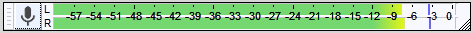

Recording
- If you have not made any recordings in Audacity before, you may want to try the the Audacity tutorial "Your First Recording" which includes step by step details of how to set up your equipment too.
{kind=link}
Setting up
- Connect your input source to your computer and verify that you are getting sound into your computer using your computer's sound input control panel or the custom mixer application that came with your particular soundcard.
- Tell Audacity which source you have selected to record from.
- Set the recording level using the input slider on the Mixer Toolbar while watching the indications in the Recording Meter. Try to aim for a maximum peak of around –6.0 dB (or 0.5 if you have your meters set to linear rather than dB). Tip: enlarging the Meter Toolbars by clicking and dragging them helps with this task.
To listen to what you are recording you have two options.
- If you computer's sound control panel supports sending the audio input to the computer's audio output then make this setting there.
- If that is not possible, click on so that it is checked.
Alternatively, if you are using an external soundcard or mixer you may be able to monitor the signal directly from that device.
For further information on setting up see: Audacity Setup and Configuration.
Detailed step-by-step instructions for setting up for recording are provided in the Your First Recording and the Copying tapes, LPs or MiniDiscs tutorials.
| As soon as you have made a recording it is strongly recommended to it immediately to WAV or AIFF (ideally to an external drive) as a safety copy before you start editing the project. |
Recording on the same track
This is the default recording behavior in Audacity.
When you click the Record button on Transport Toolbar (or use the shortcut R ) Audacity will record at the end of the currently selected, or only, track, or will create a new track if you currently have no tracks.
When recording like this, at the end of an existing recording, Audacity will place a clip line at the junction between the two recordings to aid you in separating them later if required. You can remove the clip line, if not required, simply by clicking on it joining the two clips.
To continue recording click which releases the Pause button, or press P.
Recording a new track
If you hold the button down the Record button in Transport Toolbar will temporarily change to . Then clicking on this modified Record button, or using the shortcut Shift + R will cause Audacity to create a new track and begin recording on that track from the current cursor position (or from the left edge of a region on the Timeline).
There is no need to create a new track before starting to record. If you want recording to start from the beginning of the project, click the "Skip to Start" button on Transport Toolbar or press the Home shortcut. Press the Stop button (or use its shortcut Space) to Stop the recording.
Continuing recording in a new track
Instead of stopping the recording with the Stop button or Space, you can stop the recording with the Play / Stop and Set Cursor shortcut X. When you record again using the Shift key modifier, recording will start in a new track at the end-position of the track above.
Recording a region in a new track
If there is no Timeline region, Audacity records until you stop the recording. To record only the Timeline region in a new track, use to create a new track if there are no tracks yet, select the region required in any track and ensure is enabled (on) which is its default setting. Overdub may also be enabled in Recording Preferences. There is no need for the track containing the region to be selected.
Recording for a specific length of time
To record for a specific length of time
- Unless you wish to overdub from the previous track(s) ensure is disabled, "off", which is not the default setting.
- Use to create a new track if there are no tracks yet.
- Drag-select a region in an existing track - or choose the time range to be recorded in Selection Toolbar.
- Then hold down Shift press the button (or use the shortcut Shift + R ) to record in a new track for the duration of the selection you made.
Arming Audacity for recording
Arming Audacity simply means that you are preparing it for recording, readying it without the recording actually starting
To arm Audacity:
- Click the Pause button , or its shortcut P
- Click the Record button or use the shortcut R
Audacity is now armed and ready to record. Note that monitoring in the Recording Meter will have becom active, monitoring your input signal:
- 
Once you are ready to start recording simply click the Pause button again, or its shortcut P (or the Record button or its shortcut R) and recording will commence immediately.